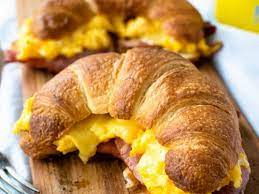
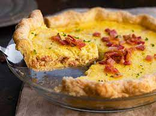
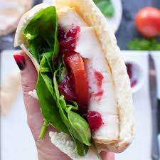
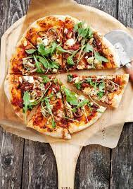
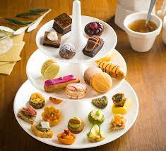
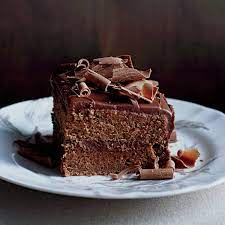

MENU:

Breakfast combo:
Croissant Sandwich: Freshly baked croissant with eggs, bacon, and cheddar cheese.
Pastry of the Day: A rotating selection of delicious pastries (e.g., Danish, muffins, or scones).
Coffee or Tea: Regular coffee or a variety of teas available.

Lunch special:
Quiche Lorraine: A savory pie filled with bacon, cheese, and a creamy custard, served with a side salad.
Soup of the Day: A daily rotating soup option made with fresh, seasonal ingredients.
Artisan Bread Slice: A choice of freshly baked bread served with whipped butter.

Sandwich delight:
Turkey & Cranberry Panini: Roasted turkey, cranberry sauce, Swiss cheese, and arugula on grilled ciabatta bread
Side Salad: Mixed greens with cherry tomatoes, cucumbers, and house vinaigrette.

Bakery's Special Pizza:
Mediterranean Veggie Pizza: Thin crust pizza topped with roasted vegetables, feta cheese, and a drizzle of balsamic glaze.

Afternoon Treat:
Assorted Mini Pastries: An assortment of bite-sized pastries like eclairs, fruit tarts, and cream puffs.
Iced or Hot Beverage: Selection of iced teas, coffee, or hot chocolate.

Sweet Indulgence:
Decadent Chocolate Cake: Rich, moist chocolate cake with layers of ganache and chocolate frosting.
Cup of Gelato: A scoop of the day's selected gelato or sorbet flavor.
s